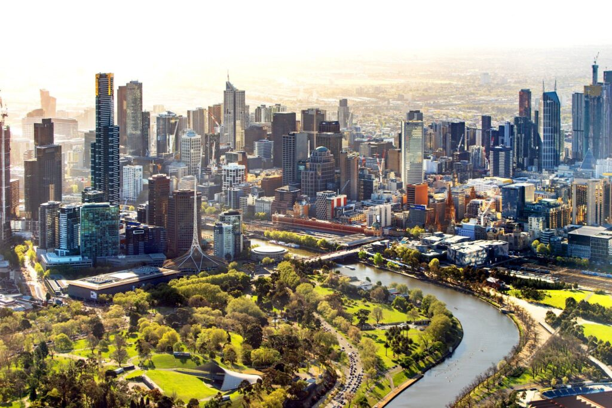
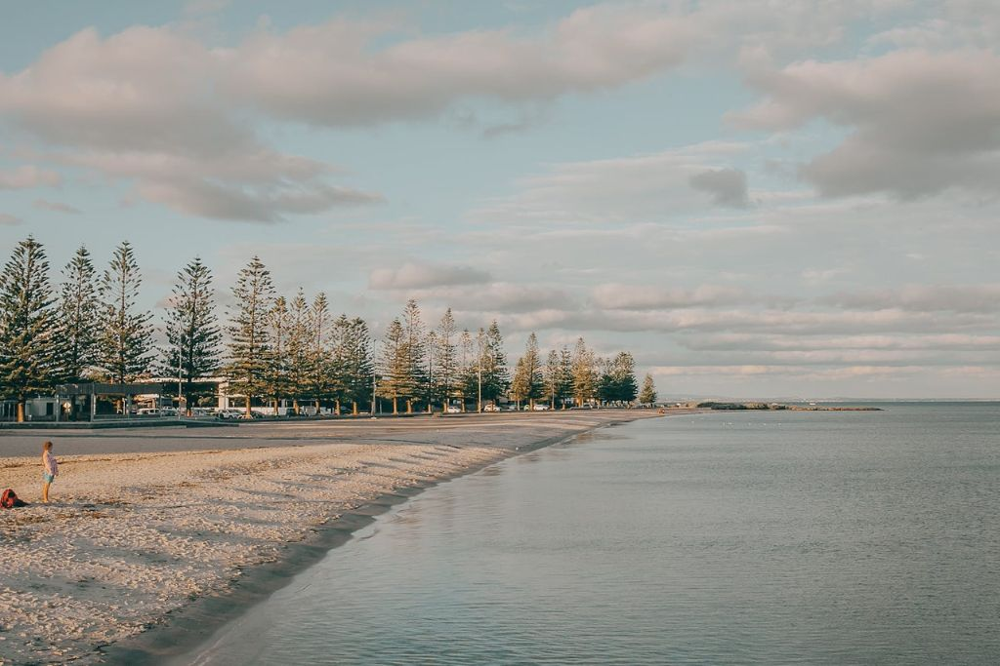

Melbourne Hidden Gems
Published on August 14, 2025
Melbourne is known for its vibrant culture, iconic landmarks, and bustling city life. But beyond the well-trodden paths lies a treasure trove of hidden gems waiting to be discovered.
1. Secret Laneways and Street Art
The city is famous for its hidden laneways adorned with colorful street art. Explore the maze of alleys, discover murals, and snap Instagram-worthy photos. Hosier Lane and Union Lane are must-see spots for art enthusiasts.
2. Quaint Cafes and Hidden Eateries
Melbourne is a coffee lover's paradise, and some of the best cafes are tucked away in quiet corners and laneways. From artisanal coffee shops to unique brunch spots, exploring these hidden cafes offers a more intimate Melbourne experience.
3. Tranquil Parks and Gardens
Escape the city buzz and unwind in Melbourne's secret parks and gardens. Discover peaceful spots like the Royal Botanic Gardens' lesser-known corners or small neighborhood parks perfect for a picnic or afternoon stroll.
4. Unique Local Shops and Boutiques
For those who love boutique shopping, Melbourne offers small, independent stores selling unique clothing, handmade goods, and quirky souvenirs. These hidden shops are perfect for finding one-of-a-kind items.
5. Offbeat Cultural Experiences
Discover Melbourne's alternative side through local theaters, pop-up galleries, and intimate music venues. These offbeat cultural experiences showcase the city's creative spirit beyond the mainstream attractions.
Exploring Melbourne's hidden gems provides a richer and more memorable experience. Step off the beaten path and uncover the unique charm and character that make the city so special.